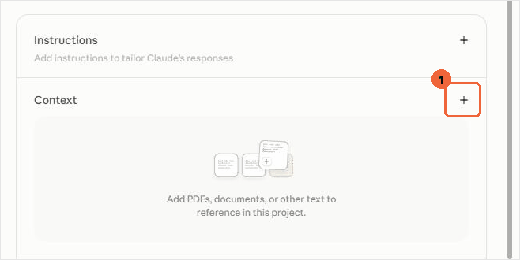

Step 03 of 05, once
Set up
The first thing you run. You never answer the same question twice.
Chapter setup once
Eight questions, one message
All eight arrive together, each with its default. Answer what you can in one reply. Anything you skip gets the default, and Claude tells you which. Every chapter starts weekly, so how often is not asked.
- Which city?Becomes your chapter name, Climate Tech [City].
- Your name?Goes on every issue as the sender. Email from a person gets opened.
- Which day to send?Pick one and never move it. No view? Tuesday or Wednesday.
- Which events count as local?The sentence every harvest uses to decide what belongs. Default: the city plus anywhere a subscriber would travel on a weeknight.
- Which web address?Chapters use two patterns and there is no published rule. The one question with no default: recorded, and flagged to confirm with the CTC team.
- How to close each issue?Default: [your first name] and the Climate Tech [City] team.
- Timezone?It offers the obvious one. You confirm.
- Anything unusual about your city?Optional. A second cluster, a university that owns the calendar, a season when everything stops.
Two documents come back
What you get back
The settings file is what every other skill reads. The plan is what you read. Sample Austin chapter.
Add the settings file to your project as a context file. Open your project. In the Context panel on the right, the plus sign, then the file. Not a chat attachment: those vanish with the conversation. Nothing else works until it is there.
